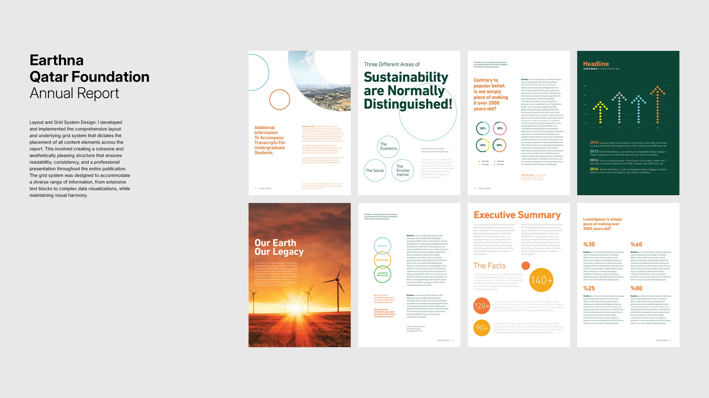
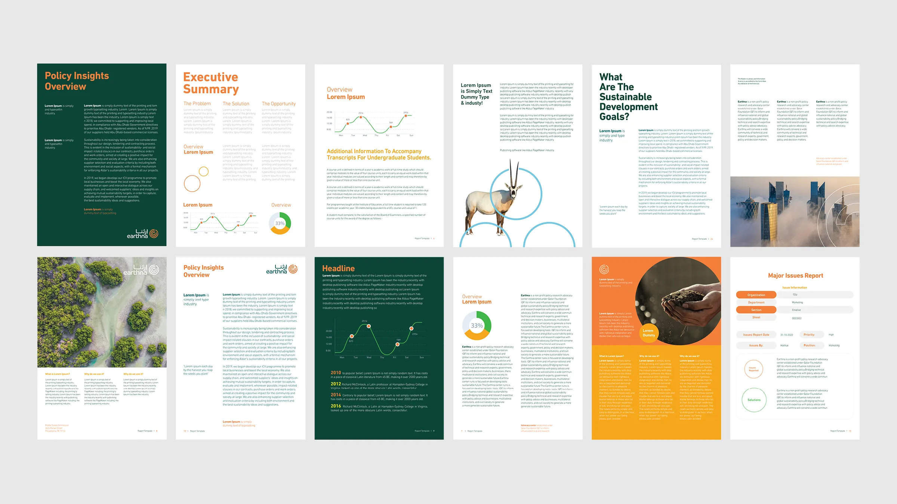
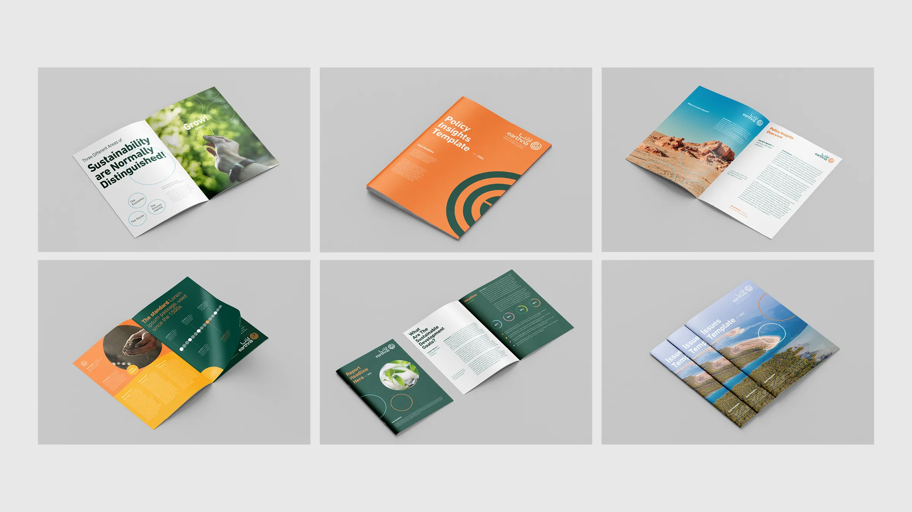

Earthna
Qatar Foundation — Annual Report
Layout and Grid System Design: I developed and implemented the comprehensive layout and underlying grid system that dictates the placement of all content elements across the report. This involved creating a cohesive and aesthetically pleasing structure that ensures readability, consistency, and a professional presentation throughout the entire publication. The grid system was designed to accommodate a diverse range of information, from extensive text blocks to complex data visualizations, while maintaining visual harmony.


